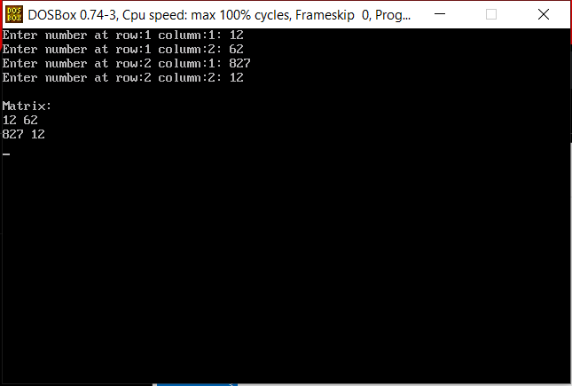
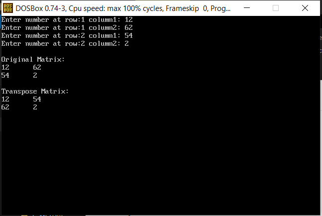
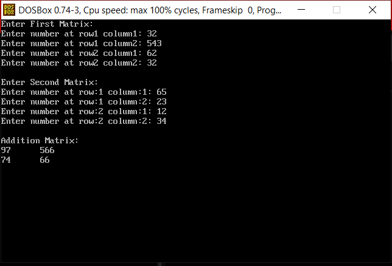
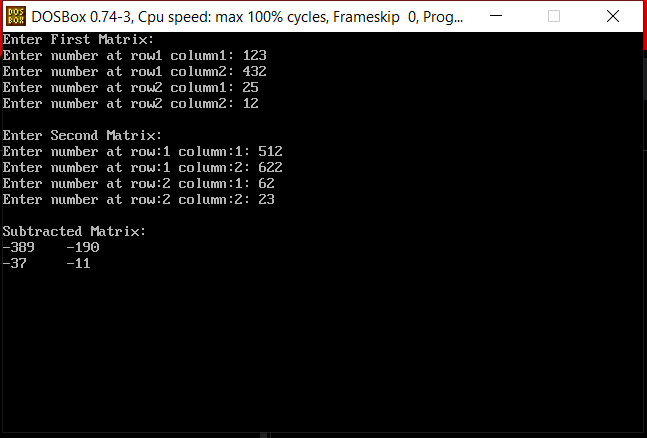
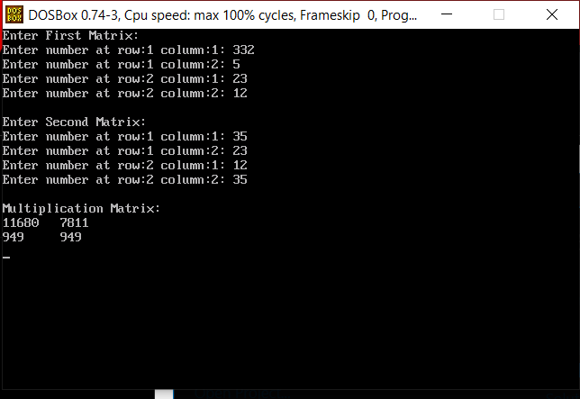

click C programming to go to home page.
| INDEX | ||
|---|---|---|
| Sr No. | Program | Solutions |
| 1 | Enter the four number from user and print it into matrix | Solution |
| 2 | Enter the matrix from and transpose them ? | Solution |
| 3 | Enter 2 matrix from user and add them ? | Solution |
| 4 | Enter 2 matrix from user and subtract them ? | Solution |
| 5 | Enter 2 matrix from user and multiply them ? | Solution |
#include <stdio.h> #include <conio.h> #include <dos.h> void main() { int m1[2][2],i,j; clrscr(); for(i=0;i<2;i++) { for(j=0;j<2;j++) { printf("Enter number at row:%d column:%d: ",i+1,j+1); scanf("%d",&m1[i][j]); } } printf("\nMatrix:\n"); for(i=0;i<2;i++) { for(j=0;j<2;j++) { printf("%d ",m1[i][j]); } printf("\n"); } delay(2000); }

#include <stdio.h> #include <conio.h> #include <dos.h> void main() { int m1[2][2],i,j; clrscr(); for(i=0;i<2;i++) { for(j=0;j<2;j++) { printf("Enter number at row:%d column%d: ",i+1,j+1); scanf("%d",&m[i][j]); } } printf("\nOriginal Matrix:\n"); for(i=0;i<2;i++) { for(j=0;j<2;j++) { printf("%d\t",m1[i][j]); } printf("\n"); } printf("\nTranspose Matrix:\n"); for(i=0;i<2;i++) { for(j=0;j<2;j++) { printf("%d\t",m1[j][i]); } printf("\n"); } delay(2000); }

#include <stdio.h> #include <conio.h> #include <dos.h> void main() { int m1[2][2],m2[2][2],m3[2][2],i,j; clrscr(); printf("Enter First Matrix:\n"); for(i=0;i<2;i++) { for(j=0;j<2;j++) { printf("Enter number at row:%d column%d: ",i+1,j+1); scanf("%d",&m1[i][j]); } } printf("\nEnter Second Matrix:\n"); for(i=0;i<2;i++) { for(j=0;j<2;j++) { printf("Enter number at row:%d column%d: ",i+1,j+1); scanf("%d",&m2[i][j]); } } printf("\nAddition Matrix:\n"); for(i=0;i<2;i++) { for(j=0;j<2;j++) { m3[i][j]=m1[i][j]+m2[i][j]; printf("%d\t",m3[i][j]); } printf("\n"); } delay(2000); }

#include <stdio.h> #include <conio.h> #include <dos.h> void main() { int m1[2][2],m2[2][2],m3[2][2],i,j; clrscr(); printf("Enter First Matrix:\n"); for(i=0;i<2;i++) { for(j=0;j<2;j++) { printf("Enter number at row:%d column%d: ",i+1,j+1); scanf("%d",&m1[i][j]); } } printf("\nEnter Second Matrix:\n"); for(i=0;i<2;i++) { for(j=0;j<2;j++) { printf("Enter number at row:%d column%d: ",i+1,j+1); scanf("%d",&m2[i][j]); } } printf("\nSubtracted Matrix:\n"); for(i=0;i<2;i++) { for(j=0;j<2;j++) { m3[i][j]=m1[i][j]-m2[i][j]; printf("%d\t",m3[i][j]); } printf("\n"); } delay(2000); }

#include <stdio.h> #include <conio.h> #include <dos.h> void main() { int m1[2][2],m2[2][2],m3[2][2],i,j,k; clrscr(); printf("Enter First Matrix:\n"); for(i=0;i<2;i++) { for(j=0;j<2;j++) { printf("Enter number at row:%d column:%d: ",i+1,j+1); scanf("%d",&m1[i][j]); } } printf("\nEnter Second Matrix:\n"); for(i=0;i<2;i++) { for(j=0;j<2;j++) { printf("Enter number at row:%d column:%d: ",i+1,j+1); scanf("%d",&m2[i][j]); } } printf("\nMultiplication Matrix:\n"); for(i=0;i<2;i++) { for(j=0;j<2;j++) { m3[i][j]=0; for(k=0;k<2;k++) { m3[i][j]=m3[i][j]+m1[i][k]*m2[k][j]; } printf("%d\t",m3[i][j]); } printf("\n"); } delay(2000); }
